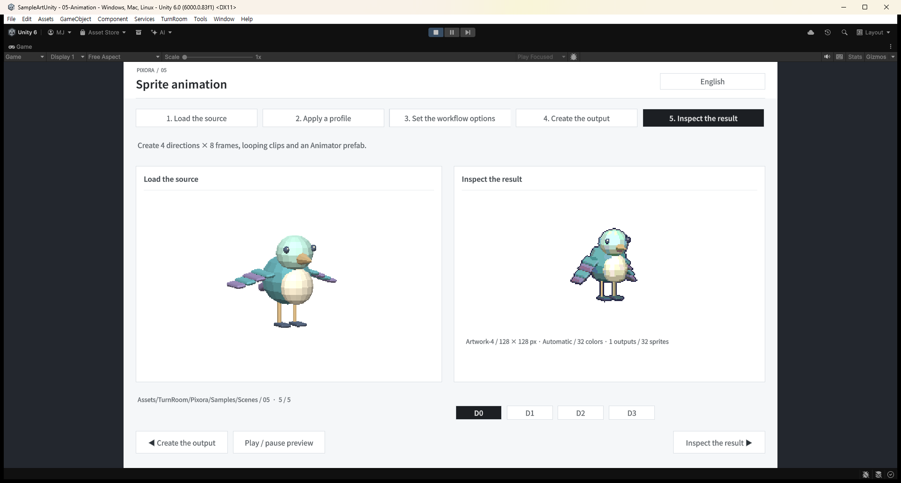
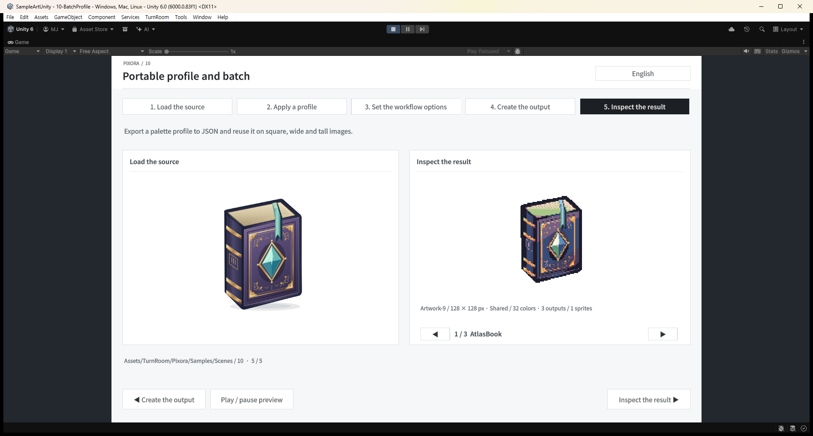
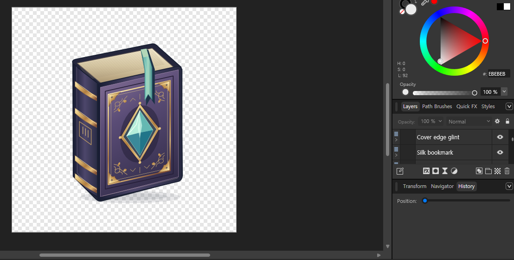
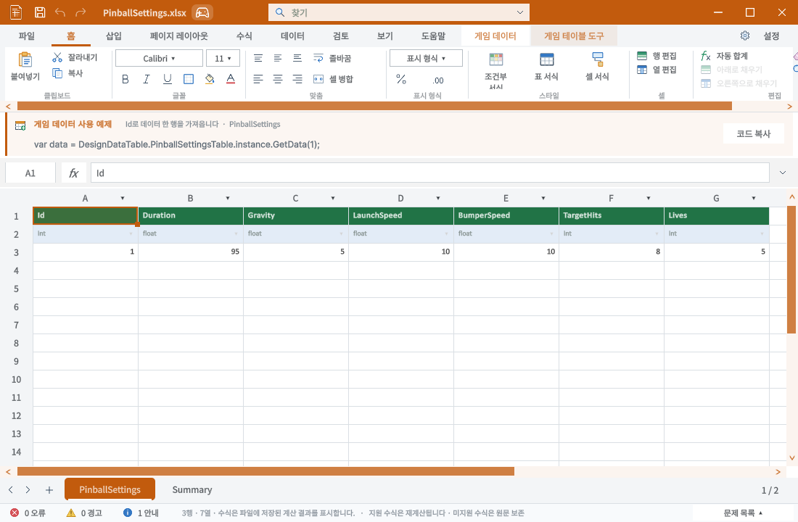

Tracefolio REPORTS & ISSUES
Tracefolio REPORTS & ISSUESPixora 예제 소재 다양화와 공용 폰트
완료6종 이미지·4종 Blender 모델을 실제 10개 씬에 적용했습니다. Affinity 벡터 원본·공용 폰트·50회 실제 단계 클릭을 검증했습니다.
작업 결과
구현·실제 실행 QA·프로젝트 d31b5a09 푸시 완료. 앞서 게시한 버그 보고서의 Pages 배포 성공과 외부 HTML200도 확인했습니다.
변경 내용
적용 내용
다양한 소재와 편집 원본
| 씬 | 소재 | 확인할 기능 |
|---|---|---|
| 01 | Tidal Tonic / 약병 | 이미지 → 128px 스프라이트 |
| 02 | Moon Moth / 나방 | 공유 팔레트 |
| 03 | Tidewatch Observatory / 전망대 | 고정 카메라 촬영 |
| 04 | Surveyor Kit / 탐사 가방 | 15개 전체·부위 출력 |
| 05 | Clockwork Kingfisher / 태엽새 | 4방향 × 8프레임 날개 움직임 |
| 06 | Aether Skiff / 비행선 | 2×2 입력 시트·회전날개 |
| 07 | 약병 warm / cool | 공통 톤 보정 |
| 08 | Courier Drone / 배송 드론 | 19개 전체·부위 출력, 4방향 × 4프레임 |
| 09 | Wayfarer Lantern / 랜턴 | 흰 배경 제거 |
| 10 | Atlas Book / Prism Cluster / Tidal Tonic | 서로 다른 오브젝트 일괄 변환 |
장면 수는 10개를 유지하고 소재와 목적을 바꾸었습니다. 게임 플레이를 추가하지 않았으며 기존 5단계 사용 흐름·씬 경로를 유지합니다. 실제 PNG, Sprite 시트, 재생 가능한 애니메이션과 재편집 작업 에셋도 생성했습니다.
원본: Affinity·Blender 소스. Affinity .af 7개(6종+시트), SVG, Blender .blend 4개와 Unity용 FBX를 제공합니다. 원본은 Assets 바깥에서 관리해 Unity의 자동 Blender 실행을 피합니다.
사용자 피드백 후 책을 다시 작업했습니다. 책장 단면·책등·금속 모서리·실크 리본·가죽 음영·보석 면을 분리했고, 최종 Affinity 원본은 176개 벡터 노드/레이어와 0개 래스터 노드로 확인했습니다. 다른 소재에도 유리 반사·날개 패턴·광물 면·금속 디테일을 추가했습니다. 도구 사용만으로 디자인 품질이 보증된다고 판단하지 않고 실제 출력을 다시 검토했습니다.
공용 폰트와 샘플 화면
Templete 1.3.0 / API 1에 TurnRoom Sans Regular 400·SemiBold 600을 추가했습니다. 두 제품의 UI Toolkit·DataTable IMGUI 스타일·샘플 DemoCanvas가 공용 자산을 사용합니다. Unity 전역 EditorStyles는 바꾸지 않습니다. 문서 셀의 Calibri 등 명시적 서식은 유지합니다.
Noto Sans KR의 정적 굵기 파생본이며 SIL OFL 1.1 원문, 저작권·출처·해시·변경 기록을 함께 포함합니다. 두 TTF 합계는 12,445,784바이트이며 각 파일은 23,174개 문자 매핑을 보존합니다. OS 폰트 설치나 실행 중 다운로드에 의존하지 않습니다.
샘플은 중립적인 검정·회색, 제목/본문의 굵기 대비, 얇은 카드 테두리와 같은 버튼 기준으로 정리했습니다. 9개 언어 제품 가이드·90개 코드 예제와 두 제품의 9개 언어 공용 폰트 가이드를 갱신했습니다.
검증
실제 실행 근거
- Affinity 3.3.1.4940: 7개
.af를 닫고 다시 열어 PNG 출력 픽셀 일치. 책은 실제 문서의 벡터 노드 수·래스터 노드 0을 확인. - Blender 5.2.3 LTS: 4개
.blend저장·FBX 출력·실제 렌더·재열기. 새와 드론의 키프레임 변화 확인. - Unity 6000.0.83f1: 최종 소재로 396개 검사 통과. 실제 생성 픽셀, 128×128 셀·피벗, 모든 전체 모델 프레임 가장자리 투명 여유, 상하 기준점·미터 단위·부위 출력·움직임 확인.
- 10개 예제 코드를 실제 실행해 출력 존재 확인, 90개 주석 언어 왕복 대조.
- 실제 Play 모드 10개 씬 × 5단계 = 네이티브 마우스 클릭 50회 통과. 각 클릭 후 실제 활성 단계 값을 확인.
- 공용 두 Font 자산과 대표 9개 언어 글리프 확인. DataTable 본문·수식 입력·버튼·제목이 공용 폰트를 쓰는지 실제 스타일 대조. 셀은 XLSX 글꼴 메타데이터를 따르므로 기본 UI 폰트와 같다는 조건에서 제외했습니다.
- 두 제품의 9개 언어 화면 18개 캡처. HTML 검사: 9개 제품 가이드·126개 장·90개 코드 예제 및 장을 유지하는 언어 전환 통과.




실패와 수정 이력
초기 구조 검사 384개는 통과했지만 실제 렌더에서 FBX 루트의 축·단위 변환이 촬영/배치 초기화에 의해 소실되는 오류를 발견했습니다. 변환을 내부 Geometry에 보존하고 외부 루트를 identity로 분리했습니다. 높이/깊이 비율을 모든 모델에 강제한 잘못된 QA 조건은 형태별 상하 기준점 검사로 수정했습니다.
네이티브 입력은 복원된 검증용 빈 창이 가려 중단된 기록을 보존했고 해당 검증 창을 치운 뒤 50회를 재실행했습니다. 검증 도구의 누락된 Runtime 어셈블리 참조·잘못된 reflection 인자도 수정한 뒤 새 Unity 프로세스에서 확인했습니다. 외부 씬 변경 확인창은 검증 프로젝트의 씬만 다시 불러왔습니다.
이미지는 실제 캡처를 무손실 WebP로 압축했습니다. Affinity 화면은 다른 문서 탭과 불필요한 여백만 잘랐으며 내용은 합성하지 않았습니다. 압축 전후 바이트와 크기는 image-compression.json에 보존했습니다.
추가 Play 모드 대조: 태엽새의 실제 실행 프레임이1→5로 진행하는 것을 두 상태 기록으로 확인했습니다. 보고서 검사: 508개 Markdown/HTML,18462개 로컬 링크·필터/검색,마이그레이션·편집 보존 검사 및 자동 테스트41개 통과. 버그 보고 공개 배포 Actions41182643654 success, 외부 HTML200 확인.
남은 사항
구현·프로젝트 푸시·실제 실행 검증을 마쳤습니다. 앞서 게시한 QA 버그 보고서의 Pages 배포 성공 및 외부 HTML200을 확인했습니다. 이번 최종 결과 HTML의 배포 확인 시각은 채팅 결과에 별도로 기록합니다. 판매용 unitypackage를 새로 만들거나 스토어에 게시한 작업은 아닙니다. 이번 DataTable 검증은 폰트·표 표시 회귀이며 전체 데이터 편집 기능 QA를 다시 수행했다는 의미가 아닙니다.
교훈 검토: 전역 지침 변경 없음. 구조 검사 통과 후 실제 화면을 확인해야 한다는 기존 규칙과 중복됩니다. FBX 변환을 보존하는 루트 분리와 Affinity 결과 품질 재검토는 프로젝트 소스·원본 안내·이 보고서에 기록했습니다. 실행 중인 다른 대화가 새 지침을 자동으로 읽었다고 간주하지 않습니다.
작업 시간
- 제안 시간: 40
70분. 후속 요청으로 공용 폰트·샘플 UI와 두 제품 표시 검증 추가(1020분 분량). - 실제로 완료된 시간: 기록 시작 2026-10-31 15:48:59 KST. 구현·QA·프로젝트 푸시·초기 공개 보고 검증 및 최종 본문 작성 2026-10-31 17:01:59 KST, 기록 기준 73.0분. 최종 게시 확인은 후속 배포 검사로 구분합니다. 최초 예상 상한70분을 초과했으며, 사용자 추가 폰트/UI·소재 재작업과 게시 검증을 계속 수행했습니다.
- XERJ: 사용 — TutorialAssets, UITemplateStyles 검색 후 현재 소스로 대조. 샘플 자산·씬·문서와 누락 범위는 rg 및 실제 Unity 실행으로 확인.